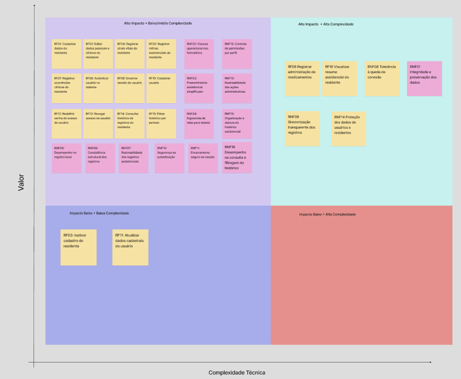

6. Matriz de Priorização
Priorização de Requisitos e Escopo
Para apoiar a definição do escopo do Produto Mínimo Viável (MVP) do sistema VitalTech, a equipe utilizou uma abordagem mista, combinando análise quantitativa e qualitativa dos requisitos.
A matriz de priorização considera tanto Requisitos Funcionais (RFs) quanto Requisitos Não Funcionais (RNFs), pois ambos influenciam diretamente a entrega de valor do produto. Os RFs representam funcionalidades executadas pelo sistema, enquanto os RNFs representam atributos de qualidade, restrições técnicas e condições de operação, como segurança, desempenho, usabilidade, rastreabilidade e confiabilidade.
Embora RFs e RNFs possuam naturezas diferentes, ambos foram avaliados a partir de dois eixos comuns: Impacto e Esforço. Dessa forma, foi possível posicioná-los em uma mesma matriz de priorização, mantendo a distinção entre os tipos de requisito.
1. Metodologia de Avaliação
A avaliação dos requisitos foi realizada utilizando uma escala de 1 a 5.
| Nota | Interpretação |
|---|---|
| 1 | Muito baixo |
| 2 | Baixo |
| 3 | Médio |
| 4 | Alto |
| 5 | Muito alto |
Para a classificação final dos valores médios, foi adotada a seguinte escala:
| Média | Classificação |
|---|---|
| 1,0 a 2,4 | Baixo |
| 2,5 a 3,4 | Médio |
| 3,5 a 5,0 | Alto |
Embora cada critério individual seja avaliado com nota inteira de 1 a 5, os valores finais de Impacto e Esforço podem apresentar casas decimais, pois são calculados pela média aritmética dos critérios avaliados.
2. Critérios para Requisitos Funcionais
Para os Requisitos Funcionais (RFs), o impacto foi calculado considerando os seguintes critérios:
| Critério | Sigla | Descrição |
|---|---|---|
| Valor operacional | VO | Quanto o requisito ajuda na rotina da instituição. |
| Frequência de uso | FU | Com que frequência a funcionalidade tende a ser usada. |
| Criticidade assistencial | CA | Quanto o requisito se relaciona com o cuidado ao residente. |
| Dependência funcional | DF | Quanto outros requisitos dependem dele. |
| Alinhamento ao MVP | AM | Quanto o requisito é necessário para validar a primeira versão do produto. |
A fórmula utilizada para o impacto dos RFs foi:
| Fórmula | Expressão |
|---|---|
| Impacto RF | (VO + FU + CA + DF + AM) / 5 |
Para o esforço dos RFs, foram considerados os seguintes critérios:
| Critério | Sigla | Descrição |
|---|---|---|
| Complexidade técnica | CT | Dificuldade de implementação da funcionalidade. |
| Quantidade de telas ou fluxos | QT | Número de interfaces ou fluxos afetados. |
| Regras de negócio | RN | Quantidade de validações e exceções envolvidas. |
| Dependência de módulos | DM | Relação com outras partes do sistema. |
| Necessidade de testes | NT | Quantidade de cenários necessários para validar a funcionalidade. |
A fórmula utilizada para o esforço dos RFs foi:
| Fórmula | Expressão |
|---|---|
| Esforço RF | (CT + QT + RN + DM + NT) / 5 |
3. Critérios para Requisitos Não Funcionais
Para os Requisitos Não Funcionais (RNFs), o impacto foi calculado considerando os seguintes critérios:
| Critério | Sigla | Descrição |
|---|---|---|
| Risco operacional | RO | Risco gerado caso o requisito não seja atendido. |
| Impacto na segurança/confiabilidade | SC | Relação com proteção, integridade e continuidade do uso. |
| Impacto na usabilidade | US | Quanto o requisito afeta a facilidade de uso. |
| Criticidade para o MVP | CM | Quanto o requisito é necessário para validar o produto inicial. |
| Verificabilidade | VF | Facilidade de demonstrar, testar ou evidenciar o requisito. |
A fórmula utilizada para o impacto dos RNFs foi:
| Fórmula | Expressão |
|---|---|
| Impacto RNF | (RO + SC + US + CM + VF) / 5 |
Para o esforço dos RNFs, foram considerados os seguintes critérios:
| Critério | Sigla | Descrição |
|---|---|---|
| Dificuldade técnica | DT | Dificuldade de implementar o requisito. |
| Impacto arquitetural | IA | Quanto o requisito afeta a estrutura do sistema. |
| Dependência de infraestrutura | INF | Necessidade de conexão, armazenamento local, autenticação ou sincronização. |
| Necessidade de medição/testes | NT | Necessidade de validar desempenho, segurança ou confiabilidade. |
| Abrangência no sistema | ABR | Quantas partes do sistema são afetadas pelo requisito. |
A fórmula utilizada para o esforço dos RNFs foi:
| Fórmula | Expressão |
|---|---|
| Esforço RNF | (DT + IA + INF + NT + ABR) / 5 |
4. Cálculo do Índice de Prioridade
A equipe utilizou o Índice de Prioridade (IP) para apoiar a comparação entre os requisitos. O cálculo adotado foi:
| Fórmula | Expressão |
|---|---|
| Índice de Prioridade (IP) | (2 × Impacto) - Esforço |
Onde:
| Sigla | Significado |
|---|---|
| IP | Índice de Prioridade |
| Impacto | Valor médio calculado a partir dos critérios de impacto |
| Esforço | Valor médio calculado a partir dos critérios de esforço |
O impacto recebeu peso 2 porque, para a definição do MVP, o valor entregue ao cliente deve ter maior relevância do que o esforço técnico. O esforço, por sua vez, atua como fator de redução da prioridade, pois requisitos mais complexos exigem maior planejamento, validação e tempo de implementação.
Exemplo de cálculo para um requisito de alto impacto e baixo esforço:
| Etapa | Cálculo |
|---|---|
| Fórmula | IP = (2 × Impacto) - Esforço |
| Substituição | IP = (2 × 5) - 2 |
| Resultado | IP = 8 |
Nesse caso, o requisito possui alta prioridade, pois entrega muito valor e exige esforço relativamente baixo.
Exemplo de cálculo para um requisito de alto impacto e alto esforço:
| Etapa | Cálculo |
|---|---|
| Fórmula | IP = (2 × Impacto) - Esforço |
| Substituição | IP = (2 × 5) - 5 |
| Resultado | IP = 5 |
Nesse caso, o requisito continua sendo importante, mas exige maior planejamento por possuir alto esforço.
5. Classificação dos Requisitos
A classificação inicial dos requisitos foi realizada a partir da relação estrutural entre Impacto e Esforço.
| Impacto | Esforço | Classificação | Decisão |
|---|---|---|---|
| Alto | Baixo | Prioridade imediata | Entra no MVP |
| Alto | Médio | Prioridade planejada | Entra no MVP, com planejamento |
| Alto | Alto | Essencial complexa | Entra no MVP (Validado pelo Cliente) |
| Médio | Baixo | Incremento rápido | Fica após o MVP |
| Médio | Médio | Incremento planejado | Fica após o MVP |
| Médio/Baixo | Alto | Baixa prioridade | Fica fora do MVP inicial |
A matriz visual foi interpretada a partir da relação entre impacto e esforço/complexidade técnica. Assim, o IP foi utilizado como apoio quantitativo, enquanto a matriz permitiu visualizar a posição estratégica de cada requisito no escopo do produto antes e depois da homologação com o cliente.
6. Matriz de Valor x Complexidade Técnica
A matriz abaixo apresenta a distribuição visual dos Requisitos Funcionais e Não Funcionais do VitalTech, considerando o impacto de cada requisito para o produto e o esforço necessário para sua implementação.

7. Cálculo dos Requisitos Funcionais
Nota de Ajuste de Escopo: Em conformidade com a validação posterior do cliente detalhada na Seção 10, todos os requisitos funcionais com impacto classificado como Alto (valores de 3,5 a 5,0), pertencentes aos quadrantes superiores da matriz, foram confirmados no MVP.
| Código | Requisito Funcional | Impacto | Esforço | Cálculo do IP | IP | Classificação | MVP |
|---|---|---|---|---|---|---|---|
| RF01 | Cadastrar dados do residente | 5,0 | 2,4 | (2 × 5,0) - 2,4 | 7,6 | Prioridade imediata | Sim |
| RF02 | Editar dados pessoais e clínicos do residente | 4,0 | 2,6 | (2 × 4,0) - 2,6 | 5,4 | Prioridade planejada | Sim |
| RF03 | Inativar o cadastro do residente | 3,0 | 1,8 | (2 × 3,0) - 1,8 | 4,2 | Incremento rápido | Não |
| RF04 | Registrar sinais vitais do residente | 5,0 | 3,0 | (2 × 5,0) - 3,0 | 7,0 | Prioridade planejada | Sim |
| RF05 | Registrar rotinas assistenciais do residente | 4,8 | 3,0 | (2 × 4,8) - 3,0 | 6,6 | Prioridade planejada | Sim |
| RF06 | Registrar administração de medicamentos | 5,0 | 3,6 | (2 × 5,0) - 3,6 | 6,4 | Essencial complexa | Sim |
| RF07 | Registrar ocorrências clínicas do residente | 4,7 | 3,0 | (2 × 4,7) - 3,0 | 6,4 | Prioridade planejada | Sim |
| RF08 | Autenticar usuário no sistema | 5,0 | 2,3 | (2 × 5,0) - 2,3 | 7,7 | Prioridade imediata | Sim |
| RF09 | Encerrar sessão do usuário | 3,8 | 1,5 | (2 × 3,8) - 1,5 | 6,1 | Prioridade imediata | Sim |
| RF10 | Cadastrar usuário | 4,2 | 2,8 | (2 × 4,2) - 2,8 | 5,6 | Prioridade planejada | Sim |
| RF11 | Atualizar dados cadastrais do usuário | 3,1 | 2,2 | (2 × 3,1) - 2,2 | 4,0 | Incremento rápido | Não |
| RF12 | Redefinir senha de acesso do usuário | 3,7 | 2,5 | (2 × 3,7) - 2,5 | 4,9 | Prioridade planejada | Sim |
| RF13 | Revogar acesso do usuário | 4,3 | 2,3 | (2 × 4,3) - 2,3 | 6,3 | Prioridade imediata | Sim |
| RF14 | Consultar histórico de registros do residente | 5,0 | 3,4 | (2 × 5,0) - 3,4 | 6,6 | Prioridade planejada | Sim |
| RF15 | Filtrar histórico por período | 4,1 | 2,5 | (2 × 4,1) - 2,5 | 5,7 | Prioridade planejada | Sim |
| RF16 | Visualizar resumo assistencial do residente | 4,0 | 3,5 | (2 × 4,0) - 3,5 | 4,5 | Essencial complexa | Sim |
8. Cálculo dos Requisitos Não Funcionais
Nota de Ajuste de Escopo: Em total consistência com as diretrizes estratégicas estabelecidas na reunião de homologação, todos os requisitos não funcionais de impacto Alto foram integrados ao MVP para garantir as premissas de segurança, robustez local e resiliência offline demandadas pelo negócio.
| Código | Requisito Não Funcional | Impacto | Esforço | Cálculo do IP | IP | Classificação | MVP |
|---|---|---|---|---|---|---|---|
| RNF01 | Integridade e preservação dos dados | 5,0 | 3,8 | (2 × 5,0) - 3,8 | 6,2 | Essencial complexa | Sim |
| RNF02 | Clareza ocupacional nos formulários | 4,5 | 2,0 | (2 × 4,5) - 2,0 | 7,0 | Prioridade imediata | Sim |
| RNF03 | Interface poupadora de cliques | 4,4 | 2,2 | (2 × 4,4) - 2,2 | 6,6 | Prioridade imediata | Sim |
| RNF04 | Ergonomia de tela para tablets | 4,5 | 2,6 | (2 × 4,5) - 2,6 | 6,4 | Prioridade planejada | Sim |
| RNF05 | Desempenho no registro local | 4,8 | 3,0 | (2 × 4,8) - 3,0 | 6,6 | Prioridade planejada | Sim |
| RNF06 | Consistência estrutural do registro | 4,6 | 2,7 | (2 × 4,6) - 2,7 | 6,5 | Prioridade planejada | Sim |
| RNF07 | Rastreabilidade dos registros assistenciais | 5,0 | 3,2 | (2 × 5,0) - 3,2 | 6,8 | Prioridade planejada | Sim |
| RNF08 | Tolerância à queda de conexão | 5,0 | 4,4 | (2 × 5,0) - 4,4 | 5,6 | Essencial complexa | Sim |
| RNF09 | Sincronização inteligente e transparente | 4,8 | 4,5 | (2 × 4,8) - 4,5 | 5,1 | Essencial complexa | Sim |
| RNF10 | Segurança na autenticação | 5,0 | 2,8 | (2 × 5,0) - 2,8 | 7,2 | Prioridade planejada | Sim |
| RNF11 | Encerramento seguro de sessão | 4,2 | 2,0 | (2 × 4,2) - 2,0 | 6,4 | Prioridade imediata | Sim |
| RNF12 | Controle de permissões por perfil | 5,0 | 3,2 | (2 × 5,0) - 3,2 | 6,8 | Prioridade planejada | Sim |
| RNF13 | Rastreabilidade das ações administrativas | 4,0 | 3,0 | (2 × 4,0) - 3,0 | 5,0 | Prioridade planejada | Sim |
| RNF14 | Proteção dos dados de usuários e residentes | 5,0 | 4,0 | (2 × 5,0) - 4,0 | 6,0 | Essencial complexa | Sim |
| RNF15 | Organização e clareza do histórico assistencial | 4,6 | 2,6 | (2 × 4,6) - 2,6 | 6,6 | Prioridade planejada | Sim |
| RNF16 | Desempenho na consulta e filtragem do histórico | 4,5 | 3,0 | (2 × 4,5) - 3,0 | 6,0 | Prioridade planejada | Sim |
9. Análise dos Resultados
A distribuição dos requisitos gerou três cenários estratégicos para o projeto:
-
Prioridade Imediata (Alto Impacto / Menor Esforço): Foco nas fundações de acesso, usabilidade direta e segurança básica na sessão (RF01, RF08, RF09, RF13, RNF02, RNF03, RNF11). São os itens de menor esforço técnico e entrega de valor imediata, alcançando os maiores Índices de Prioridade (IP).
-
Essenciais Complexos (Alto Impacto / Alto Esforço): Itens do quadrante superior direito que exigem engenharia robusta, como a gestão de medicamentos (RF06), o resumo clínico (RF16) e a infraestrutura offline/sincronização (RNF01, RNF08, RNF09, RNF14). Sua inclusão precoce mitiga riscos de retrabalho arquitetural estrutural.
-
Postergados (Médio ou Baixo Impacto): Funcionalidades de menor relevância para a validação inicial (como RF03 — Inativar cadastro e RF11 — Atualizar dados do usuário). Mesmo que apresentem baixo esforço, foram movidos para o pós-MVP.
10. Relação com o MVP
A matriz de priorização, elaborada inicialmente sob a perspectiva técnica da equipe, foi submetida à avaliação do cliente em reunião de alinhamento estratégico. Durante a sessão, o cliente validou oficialmente a inclusão integral de todos os requisitos localizados nos quadrantes superior esquerdo e superior direito da matriz como escopo definitivo do Produto Mínimo Viável (MVP) do VitalTech.
Essa validação confirma o direcionamento de focar exclusivamente nos itens de Alto Impacto para a rotina da instituição. Isso significa que o MVP não será composto apenas por vitórias rápidas (alto impacto e baixo/médio esforço), mas a equipe e o cliente assumirão em conjunto o desenvolvimento de itens essenciais complexos (alto impacto e alto esforço) que são indispensáveis para a segurança, operação offline, rastreabilidade e confiabilidade do sistema.
Desta forma, a jornada mínima de valor homologada para o MVP do VitalTech contempla:
- Autenticar o usuário de forma segura e com controle estrito de sessão;
- Cadastrar ou selecionar um residente, garantindo a integridade dos dados históricos;
- Registrar informações assistenciais fundamentais (sinais vitais, rotinas diárias e administração de medicamentos);
- Salvar os registros de forma instantânea localmente, carimbando automaticamente metadados inalteráveis de data, horário e autoria;
- Consultar e filtrar o histórico assistencial de forma limpa e cronológica para passagens de plantão;
- Consultar, filtrar e visualizar o histórico e o resumo assistencial do residente de forma limpa e cronológica;
- Manter a operação resiliente com tolerância à queda de conexão e sincronização inteligente em segundo plano.
Histórico de Revisão
| Data | Versão | Descrição | Autor |
|---|---|---|---|
| 18/05/2026 | 1.0 | Criação da matriz de priorização com critérios de impacto, esforço, cálculo do Índice de Prioridade e alocação visual dos RFs e RNFs. | Enzo Menali |
| 18/05/2026 | 1.1 | Ajuste nos status de MVP das tabelas (RFs e RNFs) e refinamento das seções de análise para refletir a aprovação integral dos quadrantes de Alto Impacto pelo cliente. | Enzo Menali |